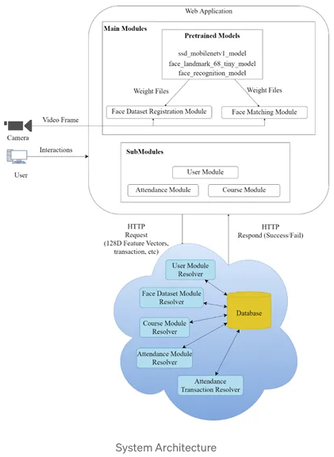

programming nodejs face recognition
August 8, 2024 at 3:57 PMTable of Contents
-
Face Recognition
- References
- Architecture
-
Setup
- MongoDB Cluster
- Dockerfile
-
Client Deployment
- #( 06/13/24@ 4:32PM )( donbuddenbaum@donbs-imac ):~/Documents/Kalaxy2/yaml/face_recognition/client@main✗✗✗
- #( 06/13/24@ 4:33PM )( donbuddenbaum@donbs-imac ):~/Documents/Kalaxy2/yaml/face_recognition/client@main✗✗✗
- #( 06/13/24@ 4:33PM )( donbuddenbaum@donbs-imac ):~/Documents/Kalaxy2/yaml/face_recognition/client@main✗✗✗
- Server Deployment
Face Recognition
References
-
DeepFace: A Library for Face Recognition and Facial Analysis
-
Part I: Implement a Face Recognition Attendance System with face-api.js
-
Part II: Implement a Face Recognition Attendance System with face-api.js
-
Part III: Implement a Face Recognition Attendance System with face-api.js
-
Part IV: Serverless Deployment with Netlify Lambda (ReactJS FE + GraphQL BE)
-
Part V: Kubernetes Deployment with Minikube For A Full Stack Application (React + NodeJS + GraphQL)
Architecture
Tech Stack
The overview architecture is the client-server and linked to the MongoDB.
- The client side will carry out all the procedure of face recognition such as face detection, facial landmark detection, feature extraction and feature matching.
- The extracted feature is sent over to the server and stored into the database.
- During the matching process, all the feature vectors are fetched accordingly to match with the detected feature vectors.
System Design Overview
Design for the education institution/college/university. In the attendance system, there are 2 user roles which are lecturer and student.
- The lecturer can:
- add course,
- view course info,
- create the attendance,
- change the attendance system,
- join the attendance room (Face Matching occurs) and
- view attendance report.
- The student can:
- enrol course,
- view course info,
- upload face image (Face Registration occurs) ,
- join attendance room and
- view attendance report.
Basic Requirements
- Attendance Form
- Attendance Transaction with Timestamp Display (Record earliest timestamp)
- Activate/Deactivation of Attendance Transaction
- Attendance Report
System Architecture
The system is a client-server architecture which contains several modules such as face registration module, face matching module, user module, attendance module and course module. Each module is backed by the resolver in the server to handle the respective GraphQL request query.

Database Design
There is a total of 5 collections, namely “People”, “Face Photo”, “Course”, “Attendance” and “Trx”.

Setup
MongoDB Cluster
https://cloud.mongodb.com/v2/666246014c572b50af60d3d3#/overview
Dockerfile
docker buildx create --use
docker buildx build --platform linux/amd64,linux/arm64 -f Dockerfile -t donb4iu/attendlytical-client --push .
run in attendlytical repo @ /Users/donbuddenbaum/Documents/rPi4/Attendlytical/client
#( 06/13/24@ 3:54PM )( donbuddenbaum@donbs-imac ):~/Documents/rPi4/Attendlytical/client@main✗✗✗
docker buildx create –use
gifted_burnell
#( 06/13/24@ 3:55PM )( donbuddenbaum@donbs-imac ):~/Documents/rPi4/Attendlytical/client@main✗✗✗
docker buildx build –platform linux/amd64,linux/arm64 -f Dockerfile -t donb4iu/attendlytical-client –push .
[+] Building 1017.6s (21/21) FINISHED docker-container:gifted_burnell
=> [internal] booting buildkit 4.1s
=> => pulling image moby/buildkit:buildx-stable-1 1.6s
=> => creating container buildx_buildkit_gifted_burnell0 2.5s
=> [internal] load build definition from Dockerfile 0.1s
=> => transferring dockerfile: 334B 0.0s
=> [linux/arm64 internal] load metadata for docker.io/library/node:16-alpine 2.3s
=> [linux/amd64 internal] load metadata for docker.io/library/node:16-alpine 2.2s
=> [auth] library/node:pull token for registry-1.docker.io 0.0s
=> [internal] load .dockerignore 0.1s
=> => transferring context: 96B 0.0s
=> [linux/amd64 1/6] FROM docker.io/library/node:16-alpine@sha256:a1f9d027912b58a7c75be7716c97cfbc6d3099f3a97ed84aa490be9dee20e787 7.9s
=> => resolve docker.io/library/node:16-alpine@sha256:a1f9d027912b58a7c75be7716c97cfbc6d3099f3a97ed84aa490be9dee20e787 0.0s
=> => sha256:d9059661ce70092af66d2773666584fc8addcb78a2be63f720022f4875577ea9 452B / 452B 0.3s
=> => sha256:eee371b9ce3ffdbb8aa703b9a14d318801ddc3468f096bb6cfeabbeb715147f9 36.63MB / 36.63MB 4.1s
=> => sha256:7264a8db6415046d36d16ba98b79778e18accee6ffa71850405994cffa9be7de 3.40MB / 3.40MB 1.7s
=> => sha256:93b3025fe10392717d06ec0d012a9ffa2039d766a322aac899c6831dd93382c2 2.34MB / 2.34MB 0.7s
=> => extracting sha256:7264a8db6415046d36d16ba98b79778e18accee6ffa71850405994cffa9be7de 0.5s
=> => extracting sha256:eee371b9ce3ffdbb8aa703b9a14d318801ddc3468f096bb6cfeabbeb715147f9 2.8s
=> => extracting sha256:93b3025fe10392717d06ec0d012a9ffa2039d766a322aac899c6831dd93382c2 0.1s
=> => extracting sha256:d9059661ce70092af66d2773666584fc8addcb78a2be63f720022f4875577ea9 0.0s
=> [linux/arm64 1/6] FROM docker.io/library/node:16-alpine@sha256:a1f9d027912b58a7c75be7716c97cfbc6d3099f3a97ed84aa490be9dee20e787 27.0s
=> => resolve docker.io/library/node:16-alpine@sha256:a1f9d027912b58a7c75be7716c97cfbc6d3099f3a97ed84aa490be9dee20e787 0.0s
=> => sha256:6574fa54520867ff3b1634aa74c4749441c37892c2ee032cf292b798e4ee6770 448B / 448B 0.2s
=> => sha256:9d78f986cf6a87dbf98f64d646b5cfe3df77e1ce63b3097dd49a2ce2ac83d092 2.34MB / 2.34MB 0.4s
=> => sha256:ec2c8699950ec39d29e23b3e0880c1ceb06f9f62a698385f880207e6f600df29 36.45MB / 36.45MB 22.6s
=> => sha256:9fda8d8052c61740409c4bea888859c141fd8cc3f58ac61943144ff6d1681b2d 3.33MB / 3.33MB 0.9s
=> => extracting sha256:9fda8d8052c61740409c4bea888859c141fd8cc3f58ac61943144ff6d1681b2d 0.4s
=> => extracting sha256:ec2c8699950ec39d29e23b3e0880c1ceb06f9f62a698385f880207e6f600df29 3.5s
=> => extracting sha256:9d78f986cf6a87dbf98f64d646b5cfe3df77e1ce63b3097dd49a2ce2ac83d092 0.3s
=> => extracting sha256:6574fa54520867ff3b1634aa74c4749441c37892c2ee032cf292b798e4ee6770 0.0s
=> [internal] load build context 1.0s
=> => transferring context: 15.16MB 0.9s
=> [linux/amd64 2/6] RUN mkdir -p /home/node/app/node_modules && chown -R node:node /home/node/app 0.7s
=> [linux/amd64 3/6] WORKDIR /home/node/app 0.0s
=> [linux/amd64 4/6] COPY --chown=node:node package*.json ./ 0.1s
=> [linux/amd64 5/6] RUN npm install --legacy-peer-deps 127.8s
=> [linux/arm64 2/6] RUN mkdir -p /home/node/app/node_modules && chown -R node:node /home/node/app 0.8s
=> [linux/arm64 3/6] WORKDIR /home/node/app 0.1s
=> [linux/arm64 4/6] COPY --chown=node:node package*.json ./ 0.1s
=> [linux/arm64 5/6] RUN npm install --legacy-peer-deps 798.2s
=> [linux/amd64 6/6] COPY --chown=node:node . . 1.7s
=> [linux/arm64 6/6] COPY --chown=node:node . . 1.4s
=> exporting to image 182.3s
=> => exporting layers 34.2s
=> => exporting manifest sha256:324880f43e043e01c26d00d158da59a9c08cf16a7531668f183dee7a85e25b53 0.0s
=> => exporting config sha256:602412009279d60a71b681564de96024d6d11d28e9989678957f9e1a9557f9ef 0.0s
=> => exporting attestation manifest sha256:5bad34d7fb101e2c4eb0966a67d4c07f9a51b480327230284cf22774ffc3ad7c 0.0s
=> => exporting manifest sha256:6496728cec4c0d2ee0d322395c47087ed74af2b84aec379d7518283d72f358b9 0.0s
=> => exporting config sha256:351e41c848794aa33d17b3554b14deed6fe6547a5e5880f38cb0fb7ad9f92656 0.0s
=> => exporting attestation manifest sha256:a475ced0e9e35d0914d6b799a7b2d90aa58b5ab197be24abc20b8c9bd1842a97 0.0s
=> => exporting manifest list sha256:24a427f16e9c1cdfee89f19da16125fbbe057dc42e50b6006928cef02d23fb9d 0.0s
=> => pushing layers 146.6s
=> => pushing manifest for docker.io/donb4iu/attendlytical-client:latest@sha256:24a427f16e9c1cdfee89f19da16125fbbe057dc42e50b6006928cef02d23fb9d 1.3s
=> [auth] donb4iu/attendlytical-client:pull,push token for registry-1.docker.io 0.0s
Build multi-platform images faster with Docker Build Cloud: https://docs.docker.com/go/docker-build-cloud
Client Deployment
#( 06/13/24@ 4:32PM )( donbuddenbaum@donbs-imac ):~/Documents/Kalaxy2/yaml/face_recognition/client@main✗✗✗
kubectl apply -f ns.yaml
namespace/attendlytical created
#( 06/13/24@ 4:33PM )( donbuddenbaum@donbs-imac ):~/Documents/Kalaxy2/yaml/face_recognition/client@main✗✗✗
kubectl apply -f configmap.yaml
configmap/client-config created
#( 06/13/24@ 4:33PM )( donbuddenbaum@donbs-imac ):~/Documents/Kalaxy2/yaml/face_recognition/client@main✗✗✗
kubectl apply -f deployment.yaml
Server Deployment
#( 06/14/24@11:15PM )( donbuddenbaum@donbs-imac ):~/Documents/Kalaxy2/yaml/face_recognition/server@main✗✗✗
kubectl apply -f mongo-config.yml
kubectl apply -f mongo-secret.yml
kubectl apply -f mongo-pvc.yml
kubectl apply -f mongo.yml
kubectl apply -f mongo-express.yml
kubectl apply -f cloudinary-secret.yml
kubectl apply -f attendlytical-server.yml
configmap/mongo-config created
secret/mongo-secret created
persistentvolumeclaim/mongo-data-pvc created
deployment.apps/mongo-deployment created
service/mongo-service created
deployment.apps/mongo-express-deployment created
service/mongo-express-service created
secret/cloudinary-secret created
deployment.apps/server-deployment created
service/server-service created